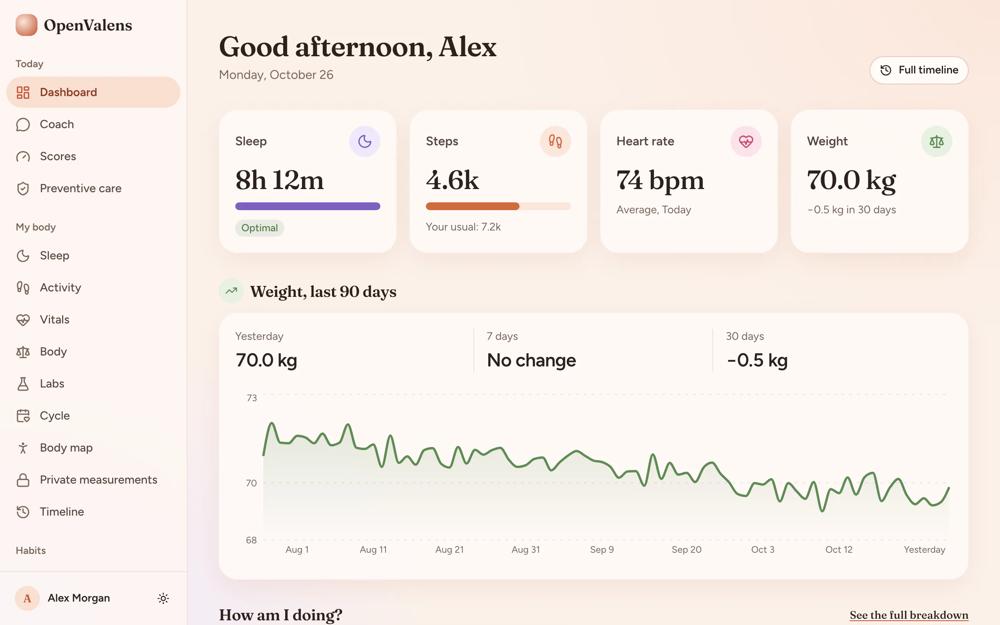
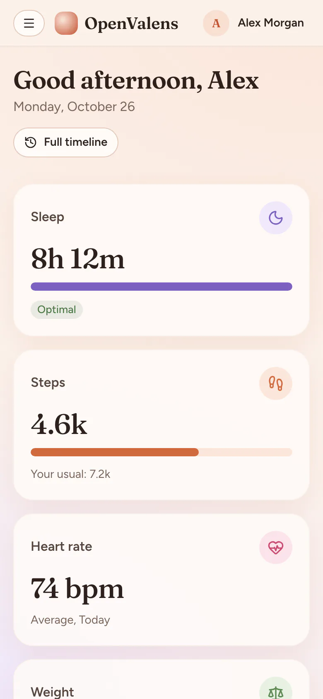
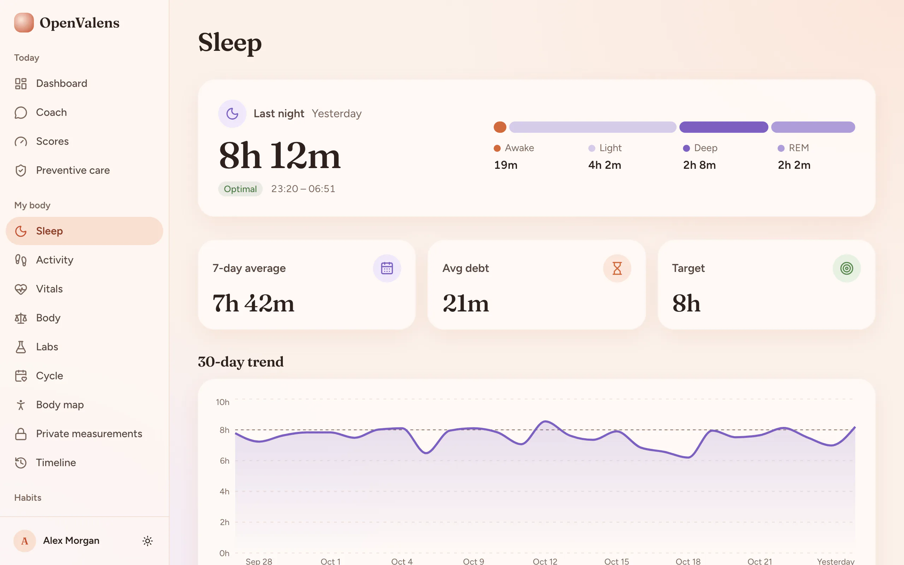
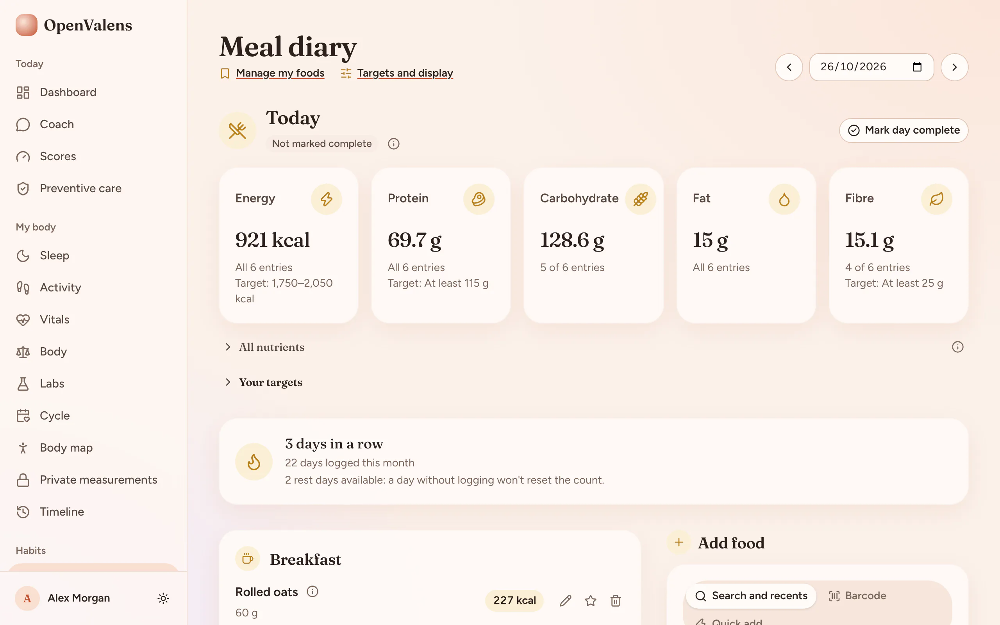
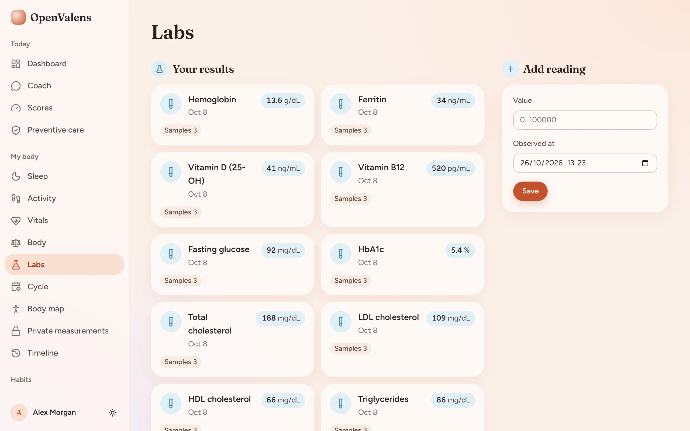
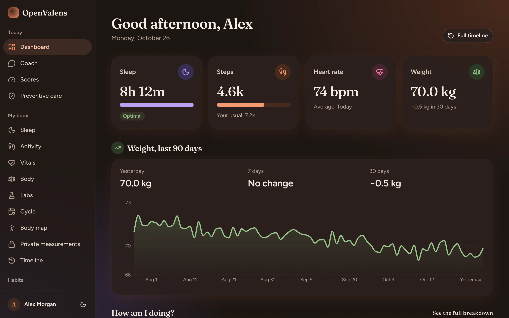

A workspace, looked after for you
OpenValens Cloud is planned to run in the EU. The hosted service is not available yet; sign-up and trial are not live.
Planned price: €7.99/month or €69/year, VAT included.
A private place for your health records. Choose a hosted Cloud workspace when it is available, or run OpenValens on your own server.


Two ways to use OpenValens
OpenValens Cloud is planned to run in the EU. The hosted service is not available yet; sign-up and trial are not live.
Planned price: €7.99/month or €69/year, VAT included.
Install the same OpenValens app on a server you manage. You choose the host and are responsible for its operation and data.
Read the self-hosting guideSimple, planned pricing
Cloud is not live yet, so these prices are for the planned service.
€7.99 / month
€69 / year
VAT included
Trial and subscription are not available yet.
Nights, stages and your trend.
Workouts, and weekly minutes beside the WHO range.
Heart rate and vitals over time.
Weight and body measurements.
USDA and Open Food Facts catalogs, or your own foods.
Each marker’s readings together.
JSON, CSV or PDF, or delete everything you own.
Invite-only workspaces with roles.
Optional and off by default. It is not medical advice and can be wrong.
Your records live in your instance’s database, with no published port. There is no analytics and no telemetry.
“Open” means open source (AGPL-3.0). It never means your records are public: every workspace is invite-only.




Pre-release 0.1.0, and no release is tagged yet. You need a Linux host with Docker, a domain and a Resend API key. Read the script and the guide first.
git clone https://github.com/nip10/openvalens.git
cd openvalens
git checkout main # or a release tag, once one exists
deploy/setup.sh installOpenValens is a personal record-keeping and general-wellness app. It helps you store, organise and view your own health-related records (such as lab results you enter or import, body measurements, workouts, nutrition, sleep and wearable data) and track healthy habits. It shows publicly available guidance published by recognised public-health authorities, attributed and unaltered, for your information. OpenValens is not a medical device. It is not intended to diagnose, screen for, prevent, monitor, predict, treat or alleviate any disease or condition, and it does not provide medical advice. Talk to a qualified healthcare professional about your health.